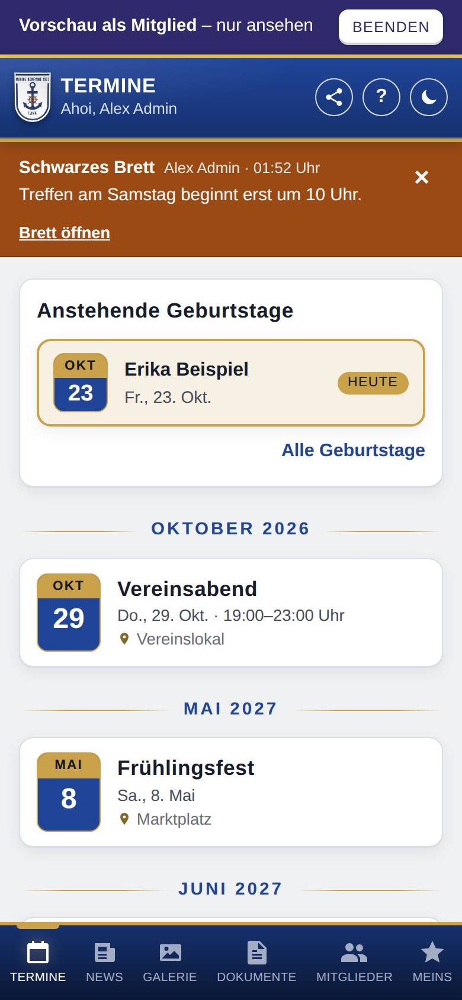
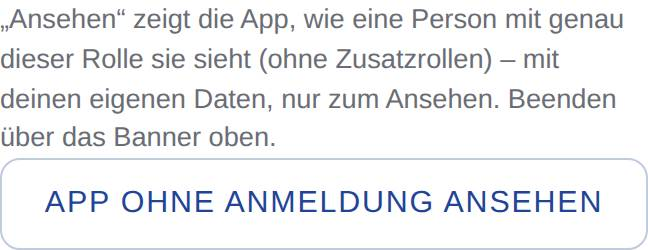

App als Rolle ansehen
Mit der Vorschau prüfst du, was eine Rolle in der App sieht: welche Tabs, Bereiche, Knöpfe und Inhalte. Du brauchst dafür kein anderes Konto.

So öffnest du die Seite
Tippe unten auf Verwaltung, dann auf Einstellungen und auf Rollen. Dort startest du die Vorschau.
Was du hier siehst
- Vorschau als … – nur ansehen: das Banner oben auf jeder Seite, solange die Vorschau läuft. Bei der öffentlichen Ansicht steht dort Vorschau ohne Anmeldung.
- Beenden: im Banner; beendet die Vorschau.
- Darunter die App so, wie die Rolle sie sieht.
So gehst du vor
Die App als eine Rolle ansehen
- Tippe auf der Seite Rollen neben der Rolle auf Ansehen.
- Die App lädt neu und beginnt auf der Startseite dieser Rolle. Sieh dich in Ruhe um.
- Tippe im Banner oben auf Beenden. Du kommst zurück zur Seite Rollen, wieder mit allen Rechten.

Die App ohne Anmeldung ansehen
- Tippe auf der Seite Rollen unten auf App ohne Anmeldung ansehen.
- Du siehst die öffentliche Ansicht, wie Besucher ohne Konto sie sehen.
- Tippe im Banner auf Beenden.
Gut zu wissen
- Nur ansehen: In der Vorschau lässt sich nichts ändern. Versuchst du es, meldet die App „In der Vorschau kannst du nichts ändern.“ Die Knöpfe bleiben trotzdem sichtbar, damit du siehst, was die Rolle angeboten bekommt. Abmelden geht weiterhin; es beendet die Vorschau und meldet dich ab.
- Deine eigenen Daten: Persönliche Seiten wie Meins zeigen deine eigenen Daten, soweit die Rolle diese Seiten hat. Alles andere kommt mit genau den Rechten der Rolle.
- Eine Rolle, keine Zusatzrollen: Angesehen wird immer genau eine Rolle. Kombinationen mehrerer Rollen zeigt die Vorschau nicht.
- Admin selbst lässt sich nicht ansehen.
- Ist der Wartungsmodus an, siehst du als andere Rolle die Wartungsseite, wie alle außer Admins. Das Banner mit Beenden bleibt.
- Die Vorschau gilt nur im aktuellen Browser-Tab und bleibt beim Neuladen erhalten. In einem anderen Tab siehst du die App normal.
- Sie braucht eine Internetverbindung. Lädt die App ohne Verbindung neu oder bestätigt der Server die Vorschau nicht mehr (z. B. weil die Rolle gelöscht wurde), endet sie von selbst. Was du in der Vorschau lädst, speichert die App nicht für den Offline-Betrieb; deine eigenen gespeicherten Daten bleiben unverändert.